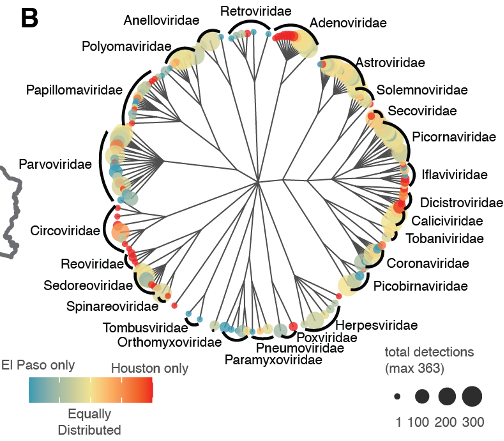

Bacterial Epigenomics
Understanding the diversity and functional impact of DNA modification in bacteria

Scientists' ability to conduct genomic sequencing on microbes and communities of microbes (metagenomes) has outpaced the ability to understand the meaning of those sequences. However, a deep understanding of genomic features and genomes is necessary to delineate the impact of microbes in health and disease. To accomplish this, we need powerful computation tools that generate testable predictions and the ability to test these predictions in the laboratory. That's where the Tisza Lab comes in.
From swabs to sewage, understanding viral evolution

Understanding the diversity and functional impact of DNA modification in bacteria
Discovering, annotating, and exploiting wild new viruses in and on the human body